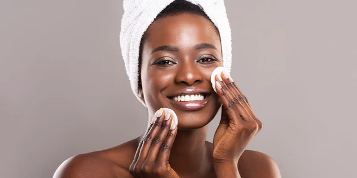
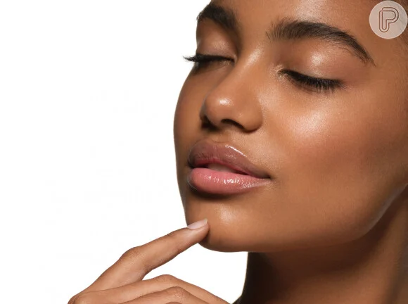

Olá, meu nome é Andresa Lídia e nesse site irei te ensinar a como se maquiar, aqui tera todo o básico que você precisa saber para ter uma pele e olhos perfeitos, deste produtos a técnicas.
O que vamos ver:
Prepareção de pele;
Pele perfeia;
Olhos;
Sobrancelha;
Boca;
lista de todos os produtos.
>>> Preparação de pele:
Preparar a pele antes da maquiagem é fundamental para garantir um acabamento suave, duradouro e natural. Cada etapa desempenha um papel importante:
Limpeza Facial:
A limpeza remove impurezas, oleosidade e resíduos de maquiagem anterior, preparando a pele para receber novos produtos sem obstruir os poros. Opções como o Gel de Limpeza Neutrogena Deep Clean e a Água Micelar L'Oréal Paris são suaves e eficazes.
Tonificação:
O tônico facial complementa a limpeza, restaurando o pH da pele e removendo qualquer resíduo que possa ter sido deixado para trás. Ajuda a minimizar a aparência dos poros e prepara a pele para absorver melhor os produtos subsequentes.
Hidratação:
Hidratar a pele é crucial para manter sua saúde e elasticidade. Um bom hidratante facial, como o Neutrogena Hydro Boost ou o Creme Nivea Soft, proporciona hidratação sem deixar a pele oleosa, preparando-a para a aplicação da maquiagem.
Primer:
O primer cria uma base lisa e uniforme para a maquiagem, minimizando a aparência de poros, linhas finas e ajudando a fixar os produtos. Existem primers específicos para controle de oleosidade, como o Vult HD Skin Perfection, e para prolongar a durabilidade da maquiagem, como o da Mary Kay.
Proteção Solar:
A proteção solar é essencial para prevenir danos causados pelos raios UV. Protetores solares faciais, como o Neutrogena Sun Fresh FPS 60 ou o Ada Tina Normalize Matte FPS 50, não só protegem contra queimaduras solares, mas também ajudam a prevenir o envelhecimento precoce da pele.
Correção de Imperfeições:
Corretivos são usados para cobrir olheiras, manchas e outras imperfeições, preparando a pele para a aplicação da base. Opções como o Corretivo Líquido Maybelline Fit Me ou o Dermacol High Cover proporcionam cobertura eficaz sem deixar a pele com aspecto pesado.
Cada etapa contribui para um resultado final mais bonito e duradouro da maquiagem, além de ajudar a proteger e cuidar da saúde da pele a longo prazo. Escolher produtos adequados ao seu tipo de pele e necessidades específicas é essencial para obter os melhores resultados.

>>>Pele perfeia:
Para alcançar uma pele perfeita usando base, corretivo, contorno e iluminador, siga os passos abaixo:
Aplicação da Base:
Escolha uma base líquida ou em pó que corresponda ao seu tom de pele. Aplique uniformemente com um pincel ou esponja para uma cobertura natural.
Concentre-se em áreas onde há necessidade de maior cobertura, como manchas ou vermelhidão.
Correção com Corretivo:
Use um corretivo líquido ou cremoso para cobrir olheiras, manchas escuras ou qualquer outra imperfeição visível.
Aplique delicadamente com o dedo ou um pincel pequeno e misture bem para um acabamento uniforme.
Contorno:
Escolha um produto de contorno (pó ou creme) que seja dois tons mais escuros do que sua pele para criar sombras e definição.
Aplique nas áreas abaixo das maçãs do rosto, nas laterais do nariz e ao longo da linha do cabelo para esculpir o rosto.
Iluminador:
Selecione um iluminador líquido, em pó ou em bastão para realçar pontos altos do rosto, como as maçãs do rosto, arco das sobrancelhas e centro do nariz.
Aplique com leveza para um brilho natural e saudável.
Finalização:
Fixe a maquiagem com um spray fixador para garantir uma longa duração.
Verifique se não há linhas visíveis ou acúmulos de produto, e faça os ajustes necessários.

>>> Olhos
Agora assista um video para aprender esfumado para iniciantes.
>>> Sobrancelha
Agora assista um video para aprender a fazer a sua sobrancelha.
>>> Boca
Para finalizar não se esqueça de passar um batom que combine com a sua sombra!